ORW-CFM-W2: First online RLHF framework for flow matching models — no human data, no collapse
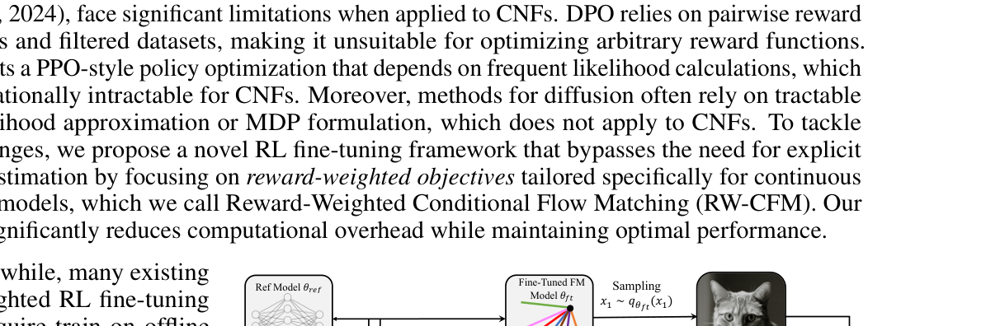
Unlike diffusion models, flow matching has no tractable likelihood — standard KL regularization cannot be computed directly.
Without diversity constraints, reward maximization causes the model to collapse onto a few high-reward modes, losing generative quality.
Existing fine-tuning methods require expensive human-curated datasets or preference annotations. ORW-CFM-W2 needs neither.
Integrates RL into flow matching via reward weighting — guides the model to prioritize high-reward regions in data space, without requiring reward gradients or filtered datasets.
Derives a tractable upper bound for W2 distance in flow matching models — prevents policy collapse and maintains generation diversity throughout continuous optimization.
Establishes a connection between flow matching fine-tuning and traditional KL-regularized RL, enabling controllable reward-diversity trade-offs and deeper understanding of the learning behavior.
Tasks: target image generation, image compression, text-image alignment. Consistently achieves optimal policy convergence while allowing controllable diversity-reward trade-offs.
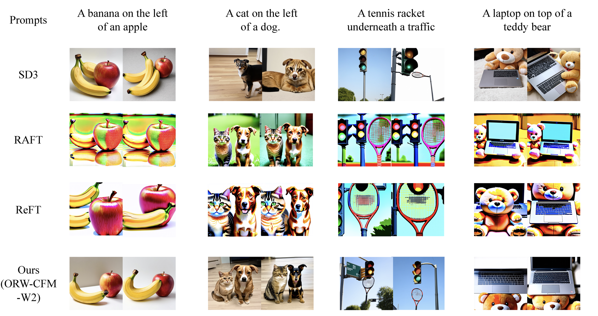
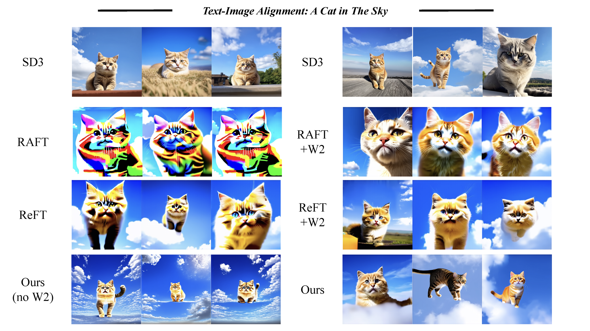
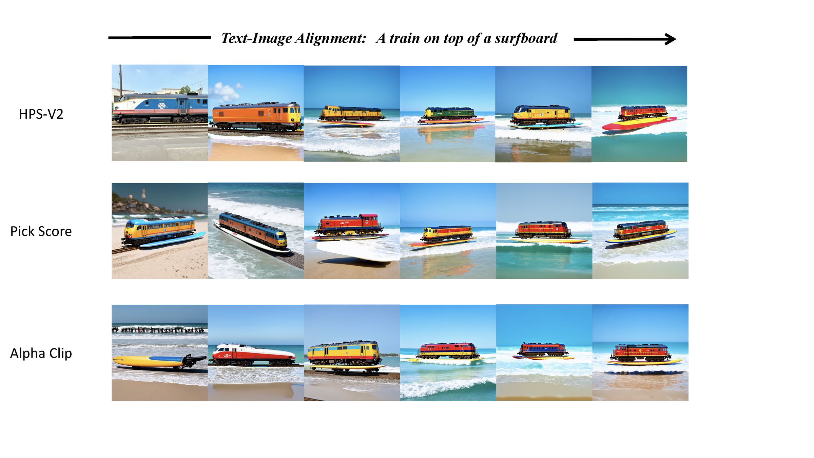
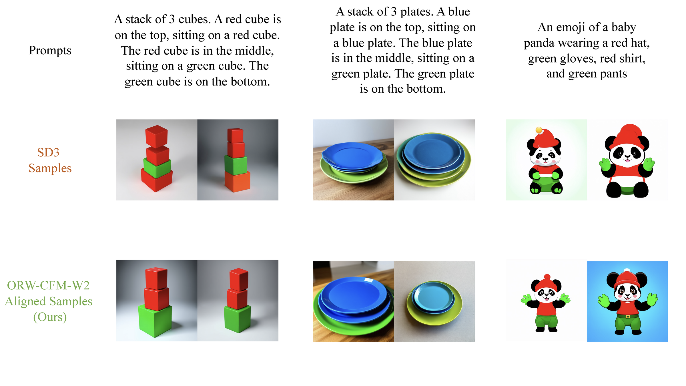
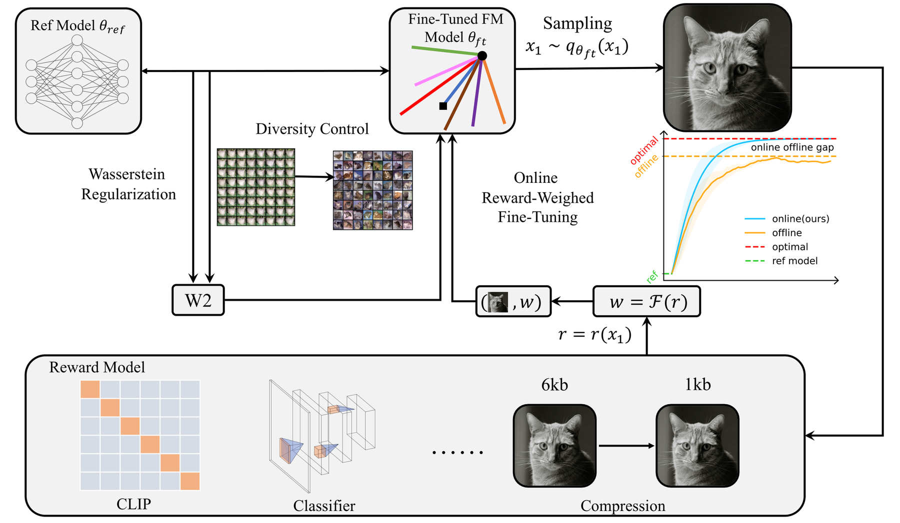
Controlled experiments on MNIST and CIFAR demonstrate the reward-diversity trade-off controlled by the W2 regularization strength α:
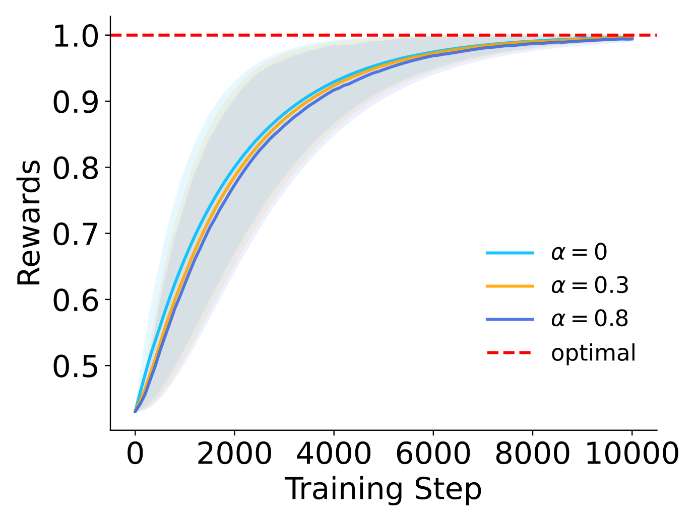
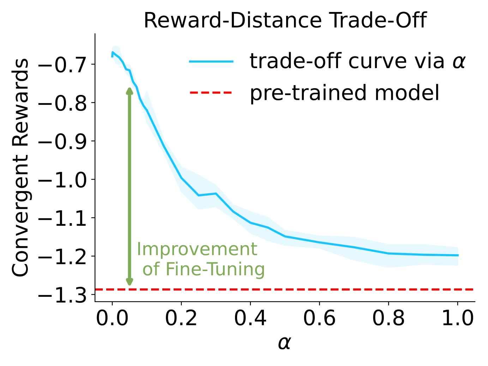
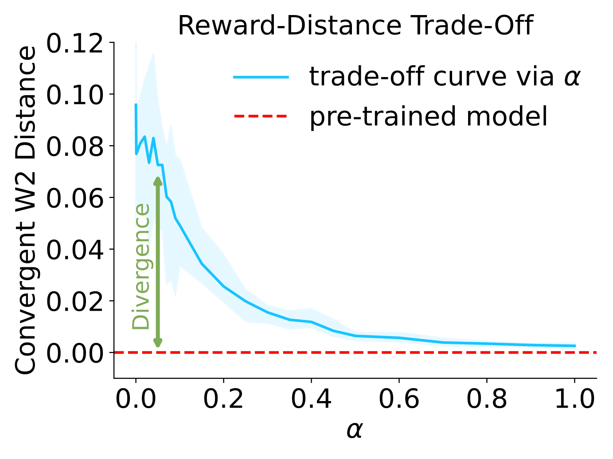
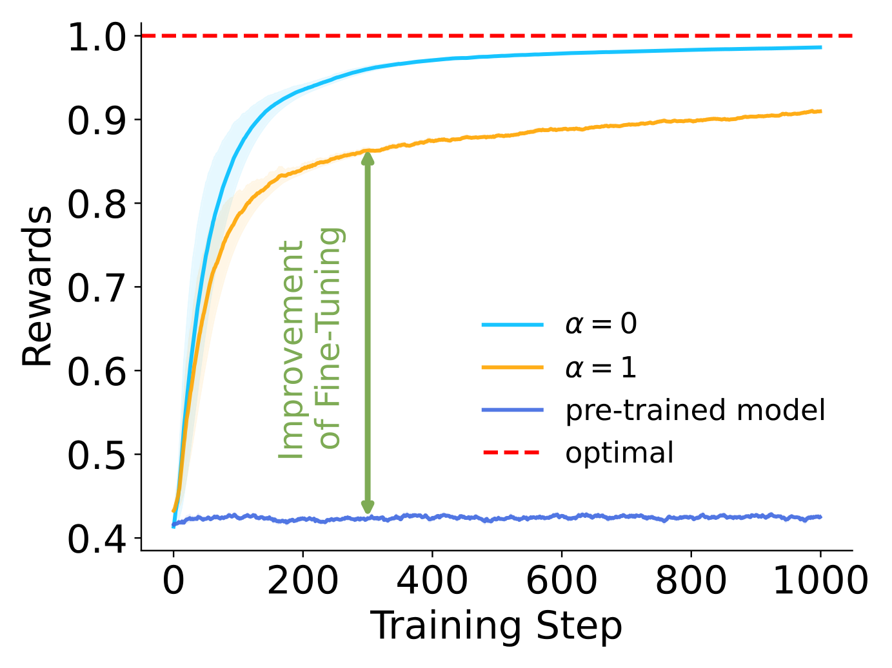
The regularization strength α provides a smooth knob between pure reward maximization (α=0) and full diversity preservation (α=1):
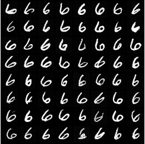
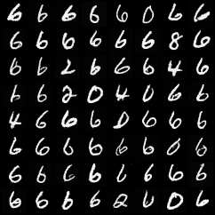
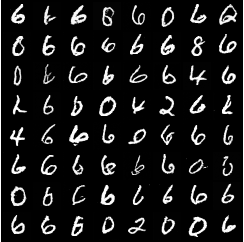
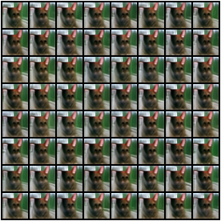
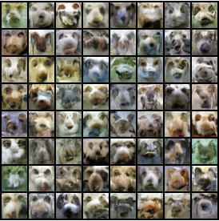
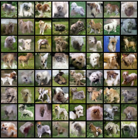
@inproceedings{fan2025online,
title={Online Reward-Weighted Fine-Tuning of Flow Matching
with Wasserstein Regularization},
author={Jiajun Fan and Shuaike Shen and Chaoran Cheng
and Yuxin Chen and Chumeng Liang and Ge Liu},
booktitle={The Thirteenth International Conference on
Learning Representations},
year={2025},
url={https://openreview.net/forum?id=2IoFFexvuw}
}